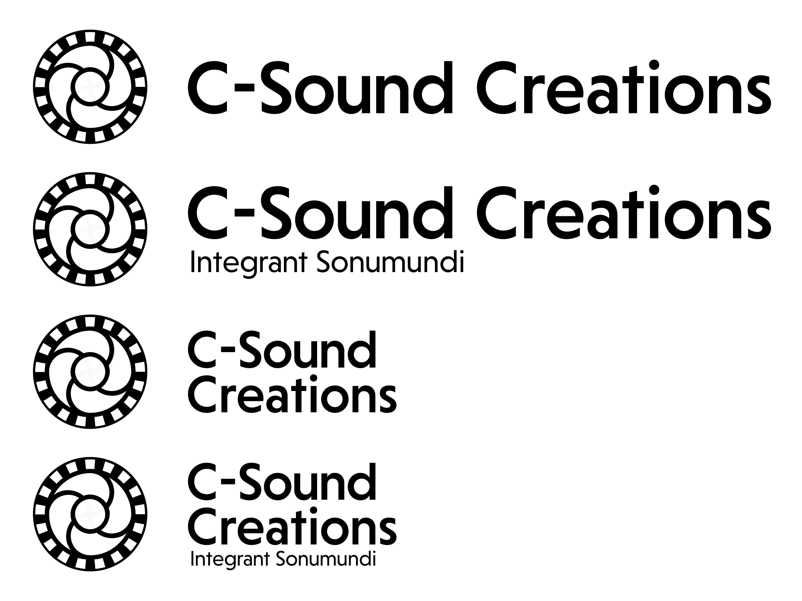

What's "C-Sound Creations"?
石川県金沢に住む手悟群 翔が設立した、
彼と彼の仲間達の音楽活動を支援し、更なる音楽性の拡張を目的とした音楽レーベルらしきものです。
Label Identity
シンボルテーマ: 「(音の)宇宙の収斂」 / Integrant Sonumundi
当Label管理元の"金澤常花製作所(FPOTFK)"シンボルで採用されております破線円環を継承しつつ、
線のみの陰陽魚を二つ直交させる事で"魂(Spirits)の調和"を、同時に正弦波が直交している様にも見える所から"音の収斂"を、
そしてその上に"宇宙"を示す円を置く事で、テーマであります「(音の)宇宙の収斂」を表現しております。
また別の視点から"コイル"の様にも見えます事からスピーカを連想させ、そこから"音と関連する何かである"とも表しております。
一方でキャッチコピーに"Integrant Sonumundi"とありますが、こちらはラテン語となっておりまして、
一部"sonum(音)"+"mundi(世界)"→"sonumundi(音の世界or宇宙)"と言った造語形式となっております。
そもそも"C-Sound"の"C"には色々な意味が含まれておりまして、
"Complex( Sound)"だったり"Converge(収束する)"だったりします。
ここで多数の質問を頂きそうなので予め言及いたしますが、音響プログラミング言語であります"Csound"とは、
関わりがありそうで関係は御座いません。